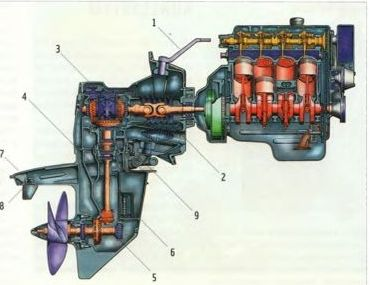
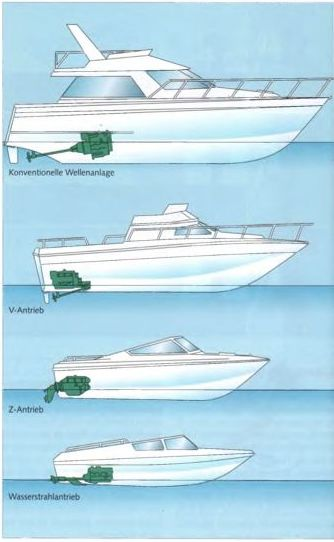
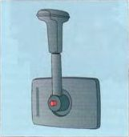
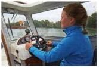

Передача мощности от двигателя через вал к гребному винту почти всегда осуществляется с помощью механического редуктора. Лишь изредка и только на больших яхтах используются гидравлические передачи, однако их потери мощности довольно высоки. Обычный лодочный редуктор — это так называемый реверсивный редуктор. Изменяя направление вращения винта, он позволяет лодке двигаться вперед или назад.
Другие функции редуктора: отключение винта (нейтраль) и обычно понижение высокой частоты вращения двигателя до более низкой частоты вращения винта.
У подвесного мотора приводной вал проходит вертикально через стойку и через коническую передачу приводит в движение расположенный под прямым углом вал гребного винта.

Пример внутреннего двигателя с Z‑приводом

У Z‑привода (Aquamatic) внешний агрегат соединен с приводным валом двойным карданным шарниром. В верхней части стойки вращение один раз поворачивается под прямым углом, а внизу через коническую передачу передается на валгребного винта. Из‑за этих двух поворотов под прямым углом агрегат и получил свое название.
Управление осуществляется поворотом Z‑привода (аналогично подвесному мотору). Поэтому маневренность значительно лучше, чем у жесткого вала с рулем.
Спортивные лодки с внутренним двигателем обычно оснащаются Z‑приводом (за редкими исключениями). Они подходят для лодок длиной примерно до 12 м.
В традиционной валовой установке коленчатый вал двигателя, реверсивный редуктор и вал гребного винта расположены на одной линии.
При V‑приводе приводной вал и вал винта образуют острый угол и направлены в противоположные стороны.
Поворот осуществляется с помощью карданных шарниров или конических передач и двух шестерен. Благодаря этому двигатель может быть установлен над винтом или даже за ним, что может быть необходимо по конструкционным или компоновочным причинам. В обоих случаях говорят о жестком валу. Такие установки целесообразны и необходимы на яхтах длиной более 12 м.
При водометном приводе (jet‑drive) отсутствуют реверсивный редуктор, винт и руль. Двигатель приводит во вращение рабочее колесо насоса. Через канал в днище лодки вода засасывается, ускоряется и под высоким давлением выбрасывается через сопло. Управление осуществляется отклонением струи с помощью дефлектора.
Для движения назад струя направляется вперед под днище лодки, и тяга меняет направление. Управление лодкой с водометным приводом значительно отличается от управления винтовой лодкой. Его КПД относительно ниже по сравнению с винтом. Поэтому такие приводы используются главным образом на спасательных и аварийных судах, поскольку под днищем лодки нет выступающих деталей, которые могли бы повредиться или травмировать человека.
Сальниковая коробка на жестком валу предотвращает попадание воды в лодку через вал гребного винта. Набивка сальника, прижимающаяся к вращающемуся валу, должна быть отрегулирована так, чтобы вал не работал полностью всухую, но и чтобы через нее просачивалось как можно меньше воды. Обычно набивка смазывается через пресс‑масленку. В современных установках применяется водосмазываемое самоуплотняющееся манжетное уплотнение.

При однорычажном управлении одновременно управляются газ и редуктор. Поскольку переход из переднего хода в задний или наоборот всегда проходит через нейтраль, серьезные ошибки переключения практически исключены. При двухрычажном управлении газ и редуктор разделены. Перед переключением необходимо убрать газ. Переключение выполняется только на холостом ходу, иначе редуктор быстро изнашивается. Двухрычажные системы уже много лет не устанавливаются на новые лодки и встречаются только на некоторых подержанных судах.
